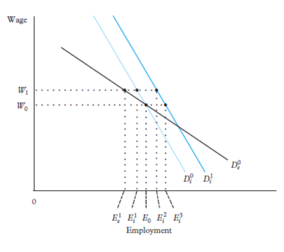
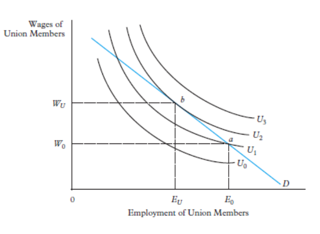
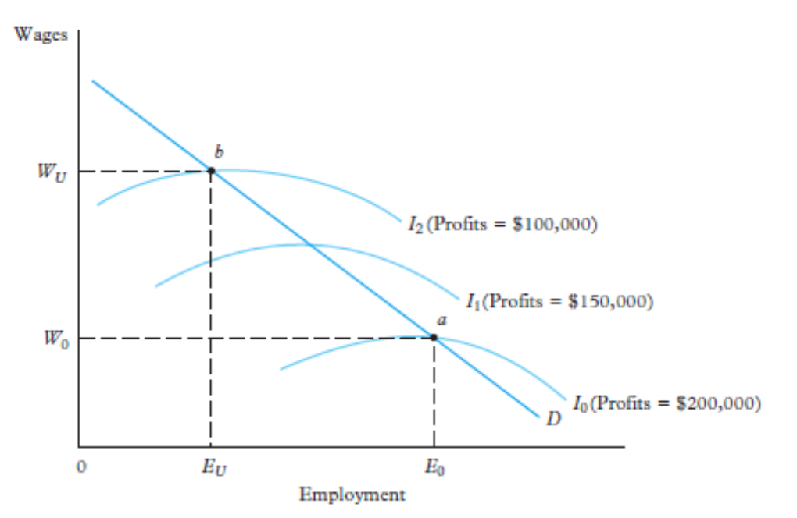
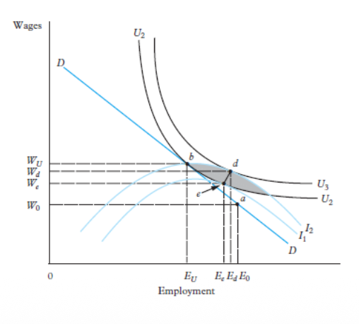
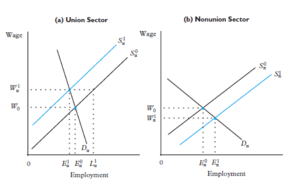

12. Trade Unions: Power, Voice & Labour Market Outcomes
🧠 I. Why Do Trade Unions Exist?
Core Definition: A trade union is an organisation representing workers in order to defend their interests in the labour market — wages, hours, safety, protection against dismissal, training rights, and a voice inside the firm.
The fundamental question of this chapter is deceptively simple: Are trade unions a market distortion, or are they a necessary institution correcting a pre-existing imbalance of power?
In a competitive labour market model, wages are determined by the intersection of supply and demand. But this model assumes that both workers and employers have equal bargaining power. In reality, this is rarely true. A single worker negotiating alone with a large employer is in a very weak position — especially if unemployment is high, skills are sector-specific, or information about job opportunities is scarce.
By organising collectively, workers can threaten to strike, disrupt production, or refuse to negotiate individually, which gives them a much stronger position. This is the fundamental economic rationale for unions: they are a collective response to an individual bargaining problem.
📋 What Unions Negotiate
- Pecuniary conditions: Base wages, bonuses, overtime rates, profit-sharing.
- Non-pecuniary conditions: Working hours, safety standards, job security, holiday entitlements, training rights, pension rights.
- Procedural rights: Grievance procedures, consultation rights before layoffs, representation in firm-level decisions.
🏭 Industrial Unions
Represent all workers in a given industry, regardless of their specific occupation (e.g., a metalworkers' union representing everyone from janitors to engineers in the steel industry).
Historically dominant in manufacturing. Emerged in the early industrial periods as heavy industry grew. Give unions strong sectoral bargaining power because they cover all occupations at once.
🛠️ Craft Unions
Represent workers of a specific trade or skill, regardless of their industry (e.g., a union of electricians or plumbers). Historically older — historical guild systems guilds that provided insurance against unemployment, death, and old age.
Their power comes from controlling the supply of skilled workers. If you need an electrician, you hire from the union.
📊 II. Density vs Coverage: The Most Important Distinction
🎯 The Single Most Exam-Critical Distinction in This Chapter
Union membership ≠ Union influence. A country can have very few union members but still have almost all workers covered by union-negotiated agreements. This is why we need two separate concepts: Trade Union Density (membership) and Collective Bargaining Coverage (influence).
📊 Trade Union Density
Measures the percentage of employees who are union members.
This tells us how many workers directly pay union fees and participate in union life. It measures union presence among workers, but not necessarily union power over the whole market.
Common mistake: Low density → weak unions. This is not always true!
📜 Collective Bargaining Coverage
Measures the percentage of employees whose wages and conditions are regulated by collective agreements.
This measures how far union-negotiated rules reach. Coverage can include non-union workers if agreements are extended by law.
Key insight: Coverage measures union influence, not just membership.
📌 Why Coverage Can Be Much Higher Than Density
There are three main institutional mechanisms that explain this gap:
1. Sector-Level Bargaining
In countries with sector-level bargaining, one collective agreement covers an entire industry (e.g. the entire construction sector, entire retail sector). This is fundamentally different from company-level bargaining, where the agreement only applies inside a single firm.
A single sector-level agreement can cover thousands of firms and hundreds of thousands of workers, even if only a minority are union members. This is why sector-level bargaining is the most powerful driver of high coverage.
2. Legal Extension Mechanisms
Many countries allow the state to legally extend collective agreements to all workers in a sector, including those who are not union members and firms that did not directly participate in the negotiation.
This is the key reason why France is a striking example: union density is structurally low, but collective bargaining coverage is almost universal. The state systematically extends sector agreements, so almost all French workers are covered — whether they belong to a union or not.
This also creates the famous free-rider problem: workers benefit from union-negotiated terms without paying union fees or contributing to union power. Over time, this erodes the financial and organisational capacity of unions.
3. Strong Employer Associations
Collective bargaining is not only about unions. It also requires coordinated employers. If employer associations are strong and organised at sector level, they can negotiate sector-wide agreements with unions. If employers are fragmented and negotiate individually, sector coverage falls.
This is often forgotten in exam answers: high coverage requires both sides to be organised — unions on the worker side, and employer associations on the firm side.
| Institutional Regime | Union Density | Coverage | Bargaining Level |
|---|---|---|---|
| Nordic Model | High | High | Centralised + Sectoral |
| Continental Model | Low | High | Sectoral + Extension laws |
| Liberal Model | Low | Low | Firm-level |
| CEE Transition Model | Low | Low | Firm-level (Decentralised) |
📉 III. Union Decline: Why Has Density Fallen?
Over recent decades, union density has declined dramatically across most advanced economies — particularly across many advanced economies. Understanding the causes of this decline is fundamental for any exam analysis.
🔍 Structural Drivers of De-unionization
- Deindustrialization: Unions were historically strongest in large manufacturing plants with homogeneous workers doing similar tasks. As economies shifted toward the service sector (with smaller, more diverse, higher-turnover workplaces), organizing workers became structurally harder. A large-scale factory of identical assembly-line workers is far easier to unionize than a fragmented network of call centres, coffee shops, or freelancers.
- Globalization & the "credible exit threat": International competition gives employers a credible threat to offshore production or outsource. If workers demand higher wages, the firm can (or can threaten to) relocate production to lower-wage countries. This dramatically weakens workers' bargaining position and discourages unionization, as the potential gains become smaller relative to the risks.
- Growth of atypical employment: The rise of part-time work, fixed-term contracts, agency work, and platform/gig work creates a precarious labour force that is difficult to organize. Gig workers (Uber drivers, Deliveroo couriers) are often legally classified as self-employed, which excludes them from standard labour law and union rights.
- Decentralization of bargaining: A policy and employer-driven shift from sector-level to firm-level bargaining makes coverage entirely dependent on whether workers in a specific firm have unionized. This creates fragmentation and reduces the reach of any single agreement.
- Political and legal environment: In some countries (notably certain countries during periods of political deregulation), governments actively weakened union legal powers, restricted the right to strike, and made firm-level union recognition harder. This legal deregulation directly accelerated decline.
🌍 Nordic Model: High Density + High Coverage
In the Nordic model, union density remains structurally high. This is because unions are institutionally embedded — in Sweden, unions historically administered unemployment insurance (the "Ghent system"), giving workers a direct financial incentive to be union members. Strong employer associations on the other side make sector-level bargaining natural. Result: high density AND high coverage.
🏴 Liberal Model: Low Density + Low Coverage
In the Liberal model, firm-level bargaining is the norm. No legal extension mechanisms. Employer resistance to unions is high. Result: low density AND low coverage. These countries experienced a sharp historical decline in density driven by political deregulation, deindustrialization, and the shift to services and atypical work.
🇫🇷 Continental Model: Low Density + High Coverage
In the Continental model, union density is historically low, but coverage remains near-universal due to systematic state extension of sector agreements. The paradox: unions are financially weak (few dues-paying members) but institutionally powerful (their agreements cover nearly everyone). This creates a fragile equilibrium with strong free-rider incentives.
🇨🇿 CEE Post-Communist Model
In Central and Eastern Europe, union density collapsed during the transition to market economies. Under socialism, unions were state-managed bodies that distributed welfare and had no real bargaining function. After the transition to capitalism, privatization and firm closures destroyed old union networks. New private firms resisted unionization. Bargaining decentralized rapidly to firm level. Coverage dropped dramatically in the new private sector.
🤖 AI and the Future of Collective Bargaining
A critical contemporary issue: Artificial Intelligence and automation create entirely new dynamics for union power. On one hand, AI threatens many routine jobs (both white-collar and blue-collar), potentially increasing workers' sense of insecurity and the need for collective voice. On the other hand, platform work and AI-driven task management further fragment workers, making traditional collective organizing harder. The key open question is whether unions can adapt to represent gig workers, remote workers, and AI-displaced workers — or whether new forms of worker organization will emerge.
📐 IV. Theoretical Models: How Unions Affect Wages & Employment
The central analytical question: given that unions want higher wages, what happens to employment? There are three main models, each making different assumptions about what unions and firms can negotiate over.
1. The Fundamental Constraint: Labour Demand

🧠 Reading the Constraint: What the Labour Demand Curve Means for Unions
Before analyzing any union model, we must understand the binding constraint: no matter what wage the union negotiates, the firm will only hire along its labour demand curve. The firm's labour demand curve shows the profit-maximising level of employment at each wage. It slopes downward because a higher wage increases labour costs, so rational firms reduce the number of workers they employ.
⚙️ Two key implications:
- A wage increase → employment decrease: If the union pushes wages from $W_0$ to $W_1$, the firm responds by moving up the demand curve, cutting employment from $E_0$ to $E_1$. The union faces a fundamental trade-off: higher wages for those who keep their jobs, but fewer jobs overall.
- The slope (elasticity) determines the severity of job losses: If the curve is steep (inelastic demand), a large wage increase causes only a small employment reduction — unions have more freedom. If the curve is flat (elastic demand), even a small wage increase causes a massive employment drop — unions face tight constraints.
🏭 When is labour demand inelastic? (Good for unions)
- When the firm operates in a monopoly product market — it can pass wage increases on to consumers without losing all market share.
- When there is no good substitute for labour in production (difficult to replace workers with machines).
- When labour costs are a small fraction of total costs (so wage increases have limited impact on total costs).
Unions are most powerful in industries that are both large and sheltered from competition — historically, public utilities, railways, dockers, and mining. This is precisely why these sectors had the strongest union traditions.
2. The Monopoly-Union Model
📋 Key Assumption
The union acts like a monopoly seller of labour: it sets the wage unilaterally, and then the firm unilaterally chooses employment along its labour demand curve. There is no joint negotiation over employment.

🧠 The Monopoly-Union Equilibrium: Step by Step
⚙️ The two key tools on the graph:
- Union Indifference Curves ($U_0 < U_1 < U_2$): The union has preferences over both wages ($W$) and employment ($E$). Higher curves represent higher union utility. The curves are downward-sloping: the union accepts lower wages if more members keep their jobs, or demands higher wages if employment falls. The shape reflects how much the union values wages vs. employment — this depends on the union's objective function.
- Labour Demand Curve ($D$): The hard constraint. The union can only choose a point on this curve — it cannot force the firm to hire more workers than it wants at a given wage.
🎯 Equilibrium (Point b):
The union optimises by choosing the point on the labour demand curve that reaches its highest attainable indifference curve. This is point b, where an indifference curve is exactly tangent to the labour demand curve. At this point:
- The union wage is $W_U$ — higher than the competitive wage $W_0$.
- Employment is $E_U$ — lower than the competitive employment $E_0$.
⚠️ The Insider-Outsider Problem
Workers who keep their jobs ("insiders") enjoy higher wages. But some workers lose their jobs entirely ("outsiders"). The union, which represents its current members, optimally trades off some jobs for higher wages for those who remain employed. This is not irrational — it is the natural outcome of a union maximising the welfare of its membership (who are the employed insiders, not the unemployed outsiders).
The monopoly union model predicts: higher wages for union workers, but lower aggregate employment in the unionized sector.
🔍 What determines the union wage?
The optimal union wage depends on the union's objective function. The union may maximise:
- Expected wage: $W \times E(W)$ — the product of the wage and employment probability. This gives an interior solution.
- Wage surplus times employment: $(W - W_a) \times E$ where $W_a$ is the alternative wage (what members could earn elsewhere). This is more standard and gives the tangency shown in the graph.
In either case, the result is the same qualitatively: the union pushes the wage above the competitive level, and employment falls.
3. The Efficient Contracts Model
⚠️ The Key Critique of the Monopoly Union Model
The monopoly union model is inefficient (Pareto sub-optimal). At point b, the union's indifference curve intersects the firm's isoprofit curve — they cross each other, they are not tangent. This means there are other wage-employment combinations where both the union and the firm could be better off. In other words, b is not on the Pareto frontier.


🧠 Efficient Contracts: Bargaining Over Both Wage AND Employment
⚙️ What are Isoprofit Curves?
An isoprofit curve shows all combinations of wage ($W$) and employment ($E$) that give the firm the same level of profit. Key properties:
- Lower isoprofit curves = higher firm profits. Moving downward in the wage-employment space means the firm pays less in wages, so profits increase.
- The peak of each isoprofit curve lies exactly on the labour demand curve. This is the mechanical link: at any given wage, the firm maximises profit by choosing employment along the labour demand curve. So the peak of each isoprofit corresponds to the profit-maximising employment at that wage.
- To the right of the labour demand curve, the firm is hiring "too many" workers — employment is above the profit-maximising level. But this is only possible if the union negotiates it as part of a package deal.
📜 The Contract Curve (line e-d):
If both the union and the firm bargain simultaneously over wage and employment, they will negotiate to points where a union indifference curve is tangent to a firm isoprofit curve. The contract curve (or Pareto frontier) is the line connecting all these tangency points.
The contract curve lies to the RIGHT of the labour demand curve. This is the critical result: efficient contracts involve higher employment than the monopoly union model. The firm agrees to hire more workers than it strictly needs at that wage, in exchange for the union moderating its wage demand slightly.
🎯 Interpreting the position on the contract curve:
- Point e: Firm has all the bargaining power. It represents an efficient contract closer to the employer-preferred outcome, as it lies on a lower union indifference curve ($U_2$) and closer to the firm's unconstrained labour demand curve.
- Point d: Union has all the bargaining power. It represents an efficient contract more favourable to the union, as it lies on a higher union indifference curve ($U_3$) giving the union greater utility.
- Intermediate points: Depend on the relative bargaining power of the two parties — determined by the threat of a strike, availability of replacement workers, legal rules, firm profits, and unemployment levels.
The efficient contracts model is theoretically more satisfying than the monopoly model because it does not waste potential gains. However, empirically, it requires that both wages and employment be jointly negotiated, which may not always happen in practice.
🧩 V. Spillover Effects: How Unions Reshape the Whole Labour Market
The analysis above focused on what happens inside the unionized sector. But unions also fundamentally change the non-union sector through what economists call spillover effects. Understanding this is critical for interpreting the "union wage premium" correctly.

🧠 The Spillover Mechanism: A Two-Sector Story
Imagine the economy has two sectors: a union sector (left panel) and a non-union sector (right panel). Initially, both pay the same competitive wage $W_0$.
Step 1 — Union sector (Left panel):
Some workers lose their union jobs. They are still in the labour force. They need work. So they look in the non-union sector.
Step 2 — Non-union sector (Right panel):
⚠️ The Critical Implication: The Union Wage Premium is Overstated
The "union wage premium" (or relative union wage advantage) is typically measured as:
But because unions push $W_u$ UP and simultaneously push $W_n$ DOWN (through the spillover), the gap $W_u - W_n$ is larger than the true union wage increase. $R$ overstates the direct effect of unions on union wages, because the non-union wage $W_n$ has already been depressed by the spillover of displaced workers.
📣 The Threat Effect: A Counterbalancing Force
However, there is a second indirect effect that works in the opposite direction: the threat effect. Non-union firms may voluntarily raise their own wages — above the market clearing level — to prevent their workers from voting to unionize. They pay a "pre-emptive premium" to keep unions out.
If the threat effect dominates, then $W_n$ is higher than the competitive wage (not lower). In this case, the observed union wage premium $R$ would understate the total influence of unions on wages, because unions have also indirectly raised non-union wages.
🔥 The Exam-Ready Answer on Union Wage Premium Bias
"The relative union wage advantage $R = (W_u - W_n)/W_n$ can be biased in either direction.
In the basic spillover model, it overstates the direct union wage effect because displaced union workers increase labour supply in the non-union sector, depressing $W_n$. This makes the gap between $W_u$ and $W_n$ larger than the true union-driven increase in $W_u$.
However, if threat effects dominate, non-union employers raise wages preemptively to deter unionization, so $W_n$ is already elevated. In this case, $R$ understates the total impact of unions on wages across the whole economy."
📊 Qualitative Implication:
Because the observed gap relies on the non-union wage as a baseline, any union-driven shift in that baseline distorts the measurement.
- If the spillover effect dominates, the baseline falls. The apparent wage gap looks artificially large.
- If the threat effect dominates, the baseline rises. The apparent wage gap looks artificially small, masking the true broader influence of unions.
📊 VI. Empirical Evidence on Union Effects
Effect on Wages
💡 Mincerian Wage Equations
The standard empirical approach estimates a Mincerian wage regression:
Where $D_i$ is a dummy variable equal to 1 if worker $i$ is a union member, and $X_i$ is a vector of personal characteristics (age, education, gender, tenure, sector, etc.). The coefficient $\beta_1$ estimates the union wage gap — how much more union members earn than similar non-union workers.
- Estimates of $\beta_1$: a consistent positive wage premium across major economies. The consensus is that union membership is associated with significantly higher wages.
- Evidence of a counter-cyclical union wage gap: the gap tends to be larger during recessions (when non-union wages fall more than union wages, which are protected by collective agreements).
- Selection bias warning: Union members are not randomly selected. Workers who join unions may systematically be different (more experienced, in larger firms, in higher-productivity industries). The wage gap estimated by OLS may not be a causal effect — it could partly reflect these pre-existing differences.
Effect on Employment & Inequality
📉 Employment Effects
- Unions tend to reduce employment growth in unionised sectors.
- A negative relationship between bargaining coordination and unemployment is usually observed, with higher coordination → lower unemployment.
- Some studies find a hump-shaped relationship: both very low and very high centralisation produce low unemployment; intermediate "hybrid" systems produce the worst outcomes.
- Unions lower job turnover — the "voice" effect encourages workers to stay rather than quit.
⚖️ Wage Inequality Effects
- Wage dispersion is significantly lower in union firms than in non-union firms.
- Unionization is estimated to reduce overall wage dispersion substantially.
- Why? Unions typically negotiate flat wage increases (same absolute increase for all workers), which compresses the distribution.
- BUT: distributional paradox: unions crowd out the least-skilled workers (who lose their jobs), and high-skilled workers may leave unions because the compressed wage structure suppresses their returns to skill. So union membership concentrates among intermediate-skill workers.
⚠️ Effects on Firm Outcomes
- Productivity: Inconclusive in the empirical literature. The "voice" effect of unions (workers expressing grievances rather than quitting) can improve productivity. But the wage premium and employment rigidities can reduce it.
- Profits and shareholder wealth: More consistent evidence of negative effects on firm profits. Studies find significant negative abnormal stock returns when firms become unionized, and higher union coverage is associated with lower profit margins.
- Total compensation: Wages are only part of what unions negotiate. Unions tend to increase non-wage benefits significantly — health insurance, pensions, paid leave. So the total compensation gap between union and non-union workers is typically larger than the wage gap alone.
📌 VII. Exam Synthesis: Ready-to-Use Paragraphs
💡 Core Distinction: Density vs Coverage
Trade union density measures the share of employees who are formal union members. Collective bargaining coverage measures the share of employees whose wages and conditions are regulated by collective agreements. Coverage can far exceed density when sector-level agreements are legally extended to non-union workers — as in France, where density is minimal but coverage is near-universal. Therefore, low union membership does not necessarily mean low union power.
💡 Monopoly vs Efficient Contracts
In the monopoly-union model, the union unilaterally sets the wage and the firm unilaterally chooses employment along its labour demand curve. This produces higher union wages but lower employment, and is Pareto inefficient. In the efficient contracts model, both wage and employment are jointly negotiated. The resulting contract curve lies to the right of the labour demand curve, implying higher employment than under monopoly-union bargaining. The final outcome on the contract curve depends on the relative bargaining power of unions and firms.
💡 The Union Wage Premium Paradox
The observed union wage premium $R = (W_u - W_n)/W_n$ may overstate the true direct effect of unions because unions simultaneously raise wages in the union sector and depress wages in the non-union sector via spillover effects (displaced workers increasing non-union labour supply). However, if threat effects dominate — non-union firms raising wages to prevent unionization — the premium understates the total influence of unions on the wage distribution.
💡 CEE De-unionization
In Central and Eastern Europe, union density collapsed during the transition to market economies. Under state socialism, unions were state-controlled and played no real bargaining role. The post-communist transition brought privatization, firm closures, and decentralization of bargaining to the firm level. New private employers resisted unionization. The result was a dramatic fall in both density and coverage, leaving most workers in the private sector without collective representation.